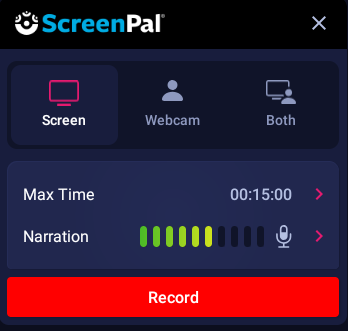
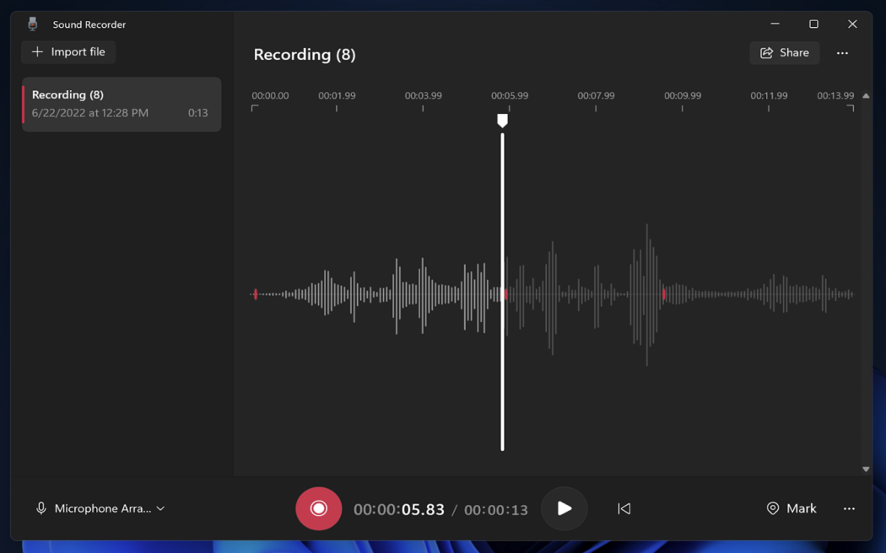

* After that you have to understand what each element stands for so you could create things easier
* You could visit this following websites to learn more Freecodecamp and W3schools
Note: Head element tag can end on top of body or bottom of the body element tag, its your choice

Well theres a two type of video thingy that can be use here as an example, Vlog and Screen Record, in which i use screen recording as an example, as you can see.

After creating and saving the Video, now record an audio and do the same steps in previous part.
just be smart doing these step, if not question your self twice at the same time, not too much you might go crazy if you disobey my idea of thinking.
Note: you can use any type of device that can record an audio or has a mic(obviously) then transfer it or import it.

First Record a video and save it on a specific folder because were gonna need the location of it
Note: you can do the same thing on photos
As you can see the upper side theres a text that says My files > Camera thats the location of the file which results of src="./My files/Camera/Video.mp4"
as you can see on the example we use the tag called audio & source which inside is src & type to learn more about this element searcch it up in W3schools so that you'll have a better understanding on the element.